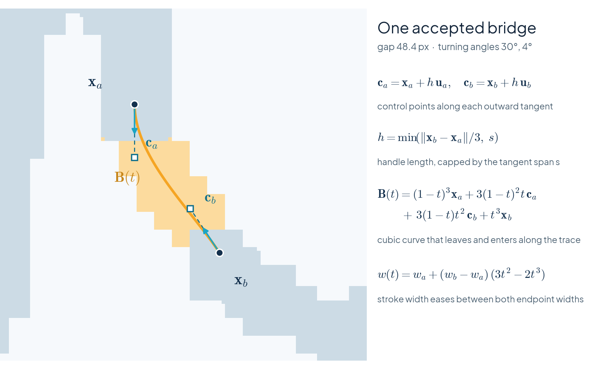
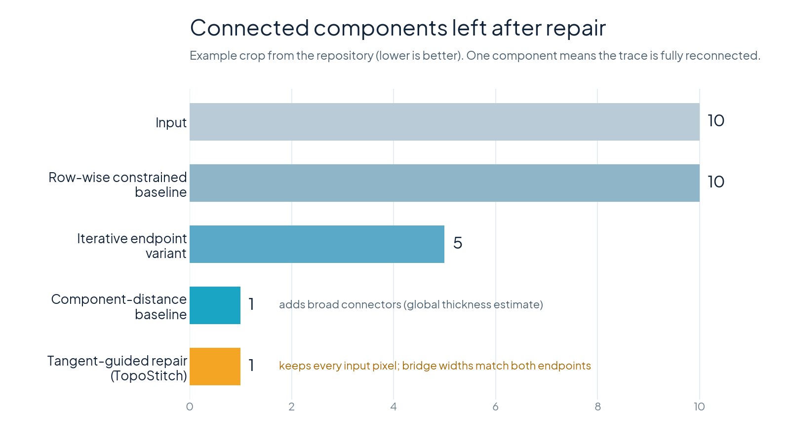
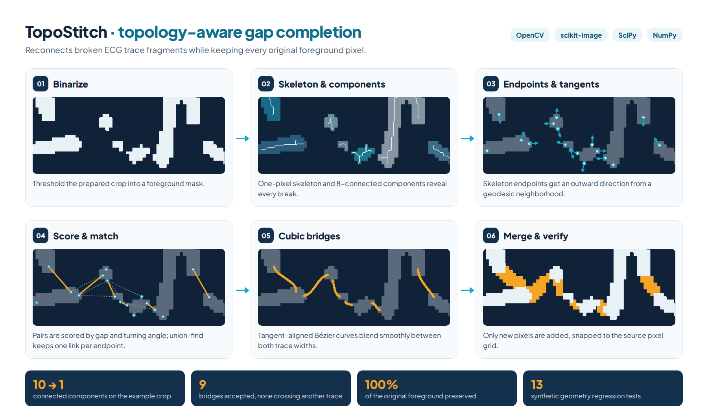

TopoStitch: Topology-Aware Gap Completion for Fragmented ECG Traces
Scanned and photographed ECGs often come apart into disconnected fragments once they are thresholded, which blocks any later digitization. TopoStitch represents the trace geometrically (skeleton, components, endpoints, and their outward directions), scores which fragments belong together, and draws smooth bridges that respect the trace's own direction, width, and pixel grid. On the example crop it reduces 10 components to 1 with 9 bridges while preserving every original foreground pixel.



How it works

- 01
Binarize
The prepared crop is thresholded into a foreground mask. All later steps work on this mask and never remove any of its pixels.
- 02
Skeleton and components
A one-pixel skeleton (scikit-image) and 8-connected components (OpenCV) expose where the trace is broken.
- 03
Endpoints and tangents
Skeleton pixels with exactly one neighbor are endpoints. A geodesic walk along the skeleton gives each one an outward direction and a local trace width.
- 04
Score and match
Endpoint pairs from different fragments are scored by distance plus turning angle. Pairs are accepted greedily, with union-find so no fragment is linked twice.
- 05
Cubic bridges
Each accepted pair is joined by a cubic Bézier curve aligned with both tangents; its stroke width eases from one endpoint width to the other.
- 06
Merge and verify
Bridges that would cross a third fragment or cover existing trace are rejected. New pixels are snapped to the source's pixel-block grid and merged.
Formulation
Endpoints and outward tangents
\(\mathcal{S}\) is the skeleton and \(D\) the distance transform of the mask. \(Q\) holds the skeleton points that a geodesic walk of length at most \(s=15\) px reaches at 70% or more of its range, so \(\mathbf{u}\) points from the trace body toward the gap. The local width is \(w=\max(1,\,2\,\mathrm{median}\,D-1)\).
Which fragments belong together
A pair is a candidate only if the gap is at most 65 px, \(\max(\theta_a,\theta_b)\le 110^\circ\), and \(\tfrac12(\theta_a+\theta_b)\le 70^\circ\). Candidates are accepted in order of increasing \(S\); an endpoint is used at most once, and union-find skips pairs whose fragments are already connected.
Tangent-aligned bridge
Because the control points lie on the outward tangents, the curve leaves \(\mathbf{x}_a\) and arrives at \(\mathbf{x}_b\) along the trace. Its stroke width follows the smoothstep \(w(t)=w_a+(w_b-w_a)(3t^2-2t^3)\), so it meets each end without a thin neck.
Matching the source pixel grid
\(x_k\) are positions of foreground edges along one axis, weighted by their counts \(\omega_k\). When \(R(P^\star)\ge 0.78\) on both axes, new bridges are resampled onto the detected block lattice (about 5 px on the example), so they look like the rest of the image; with weaker evidence the native pixels are kept.
Results
- 10 → 1connected components on the example crop
- 9bridges accepted, none crossing another fragment
- 100%of the original foreground pixels preserved (4,025 pixels added)
- 13synthetic geometry regression tests
The demonstration covers connectivity on prepared crops; time–voltage calibration and clinical validation are future work.